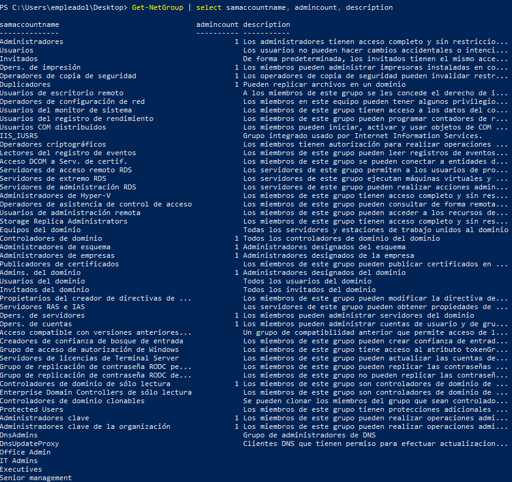
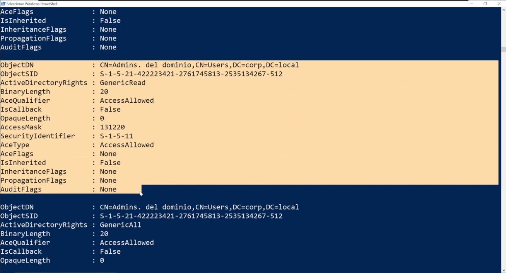
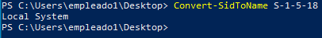
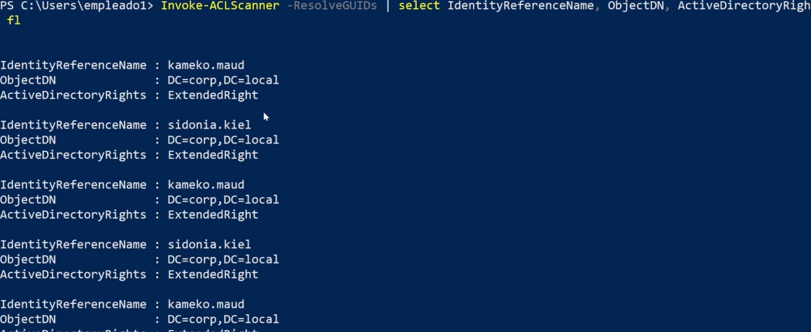
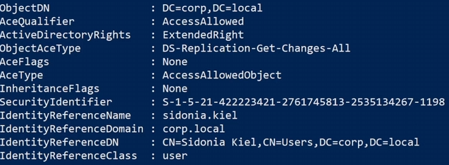
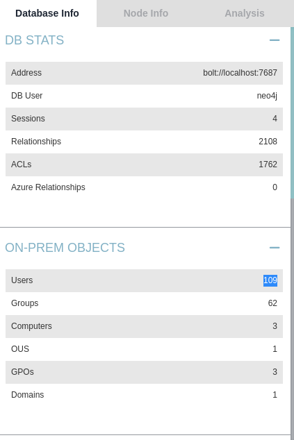
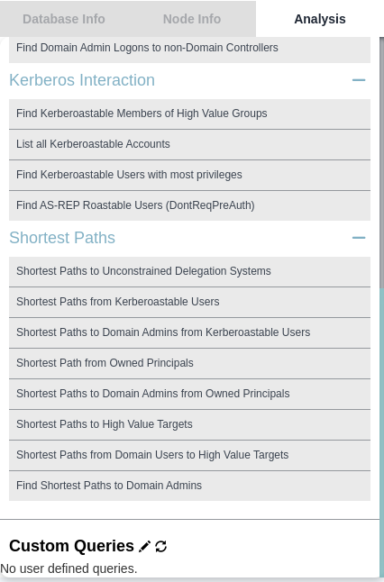
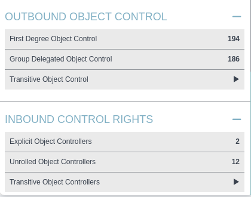
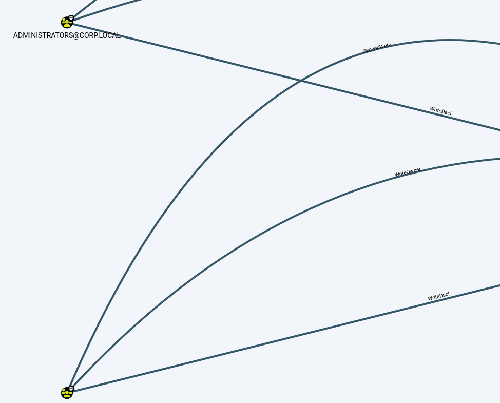
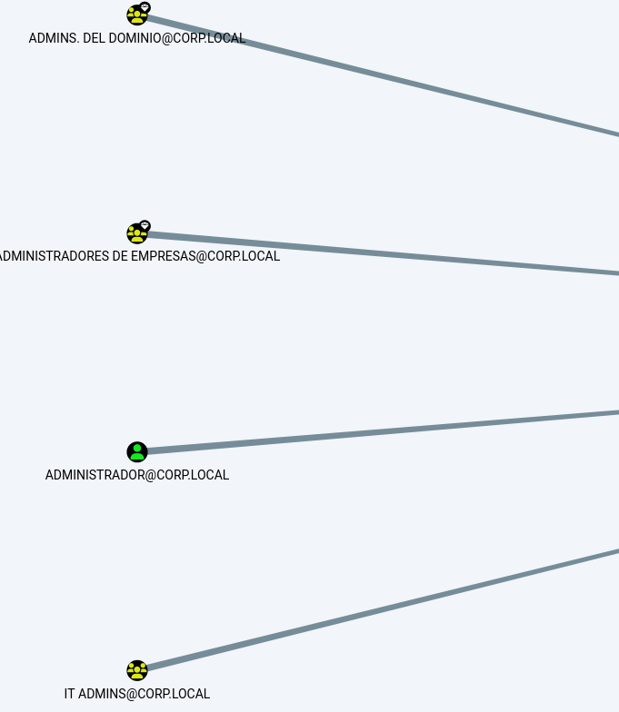

Identificación ACLs vulnerables
OBJETIVO: A partir de un usuario sin privilegios convertirnos en un administrador del dominio.
En este caso vamos a intentar de explotar los privilegios de acceso de ACL aprovechando pequeños permisos que tengamos sobre ciertos objetos ir expandiendo los privilegios.
1: IDENTIFICAR ACEs QUE RESULTAN INTERESANTES PARA EXPLOTACIÓN
Listado de ACEs vulnerables
A continuación os indico un listado de ACEs que debemos tener en cuenta desde el punto de vista de seguridad de cara a su explotación:
ForceChangePassword: Proporciona la capacidad de cambiar la contraseña del usuario objetivo sin conocer el valor actual. Abusado con Set-DomainUserPassword
AddMembers: Proporciona la capacidad de añadir usuarios, grupos o equipos arbitrarios al grupo de destino. Abusado con Add-DomainGroupMember
GenericAll: Proporciona control total del objeto, incluyendo la capacidad de añadir otros usuarios a un grupo, cambiar una contraseña de usuario sin conocer su valor actual, registrar un SPN con un objeto de usuario, etc. Abusado con Set-DomainUserPassword o Add-DomainGroupMember
GenericWrite: Proporciona la capacidad de actualizar cualquier valor de parámetro de objeto de destino no protegido. Por ejemplo, actualizar el valor del parámetro "scriptPath" en un objeto de usuario de destino para hacer que ese usuario ejecute los comandos/ejecutables especificados la próxima vez que se conecte. Abusado con Set-DomainObject
WriteOwner: Proporciona la capacidad de actualizar el propietario del objeto de destino. Una vez que el propietario del objeto ha sido cambiado a un usuario que el atacante controla, el atacante puede manipular el objeto de la manera que crea conveniente. Abusado con Set-DomainObjectOwner
WriteDACL: Proporciona la capacidad de escribir una nueva ACE en la DACL del objeto objetivo. Por ejemplo, un atacante puede escribir una nueva ACE en la DACL del objeto de destino, dándole el "control total" del objeto de destino. Abusado con Add-NewADObjectAccessControlEntry
AllExtendedRights: Proporciona la capacidad de realizar cualquier acción asociada con los derechos extendidos de Active Directory contra el objeto. Por ejemplo, añadir usuarios a un grupo y forzar el cambio de la contraseña de un usuario de destino. Se abusa con Set-DomainUserPassword o Add-DomainGroupMember
Por supuesto, esta no es la lista completa de ACEs que pueden vulnerarse, existen decenas de permisos que bajo ciertas circunstancias también pueden llegar a ser explotados.
Vamos a la maquina windows comprometida, cargamos powerview y seleccionamos un objetivo:
Por ejemplo vamos a listar los grupos e info:

Vamos a buscar las ACEs del grupo Admins del dominio:
Get-DomainObjectAcl -Identity "Admins. del dominio"

Lo que vemos es:
- Objeto sobre el que se aplica la ACE : OBJECTSID
- El tipo de permiso : Active directory rights
- Tipo de ACE : AceType
- Identificador de seguridad que tiene el objeto que tiene los permisos GenericAll sobre admins del dominio
Cada uno de esos bloques se trata de un ACE del DACL del grupo Admins del dominio.
Para convertir un SID a su nombre:
Convert-SidToName S-1-5-21-422223421-2761745813-2535134267-512
Este security identifier es el objeto que tiene privilegios sobre el identifier de arriba:
Convert-SidToName S-1-5-18

Para obtener lo más interesante aplicamos filtro:
Get-DomainObjectAcl -Identity "Admins. del dominio" | select @{name="Name";expression={Convert-SidToName $_.SecurityIdentifier}},AceType,ActiveDirectoryRights | fl
Para también formatear esos SID de forma automática.

Otro comando que proporciona todas las ACEs de los objetos dentro del dominio y muestra aquellas que tienen un valor mayor a 1000 en el SID ya que esto quiere decir que esta DACL la ha creado un administrador y no es una por defecto.
Esto es porque los grupos por defecto suelen estar bien pero los creados por administradores pueden tener errores.
Invoke-ACLScanner -ResolveGUIDs | select IdentityReferenceName, ObjectDN, ActiveDirectoryRights | fl
Con este comando se ocupa de sacar las mas interesantes.

Como vemos el valor final del SID es mas de 1000
Una mejor manera de realizar una identificación por supuesto es BLOODHOUND.
Con el archivo ya en la maquina objetivo que actualmente lo haremos de forma manual desde el equipo windows WS01:
. .\bloodhound.ps1
Invoke-BloodHound -CollectionMethod All
Pasamos igual que antes el zip a Kali y lo abrimos con BloodHound.
sudo neo4j console
bloodhunt
Al cargar podemos ver como ahora hay mucha más información que antes, relaciones, usuarios, hosts, ACLs...

Ahora si en análisis buscamos que busque la ruta más corta para obtener permisos de administrador:

Si hacemos click en admins del dominio y nos vamos a la información de la izquierda podemos ver:

- OUTBOUND OBJECT CONTROL: Se tratan de los privilegios que tiene este grupo sobre otros objetos
- INBOUND CONTROL RIGHTS (DACLs): Los privilegios que tienen otros objetos sobre este
Si hacemos click para saber que objetos tienen privilegios sobre este, nos damos cuenta de que hay dos grupos que los tienen esos 3 privilegios (GenericWrite, WriteOver, WriteDacl):

Esto significa que comprometiendo uno de estos dos grupos podríamos auto promocionarnos al grupo de admins del dominio.
Por lo que si nos vamos a administrators y buscamos que usuarios tiene:

Como vemos tiene varios usuarios que son por default pero además vemos que tiene uno que no es por defecto así que buscamos que miembros son usuarios del mismo:

Y como vemos tiene a estos 6 usuarios.